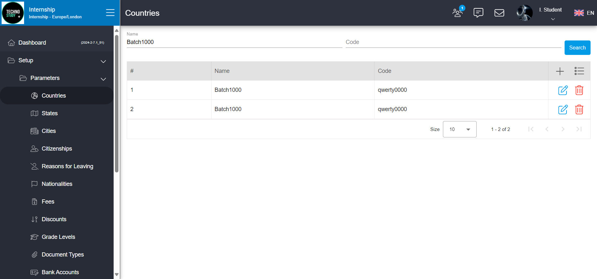
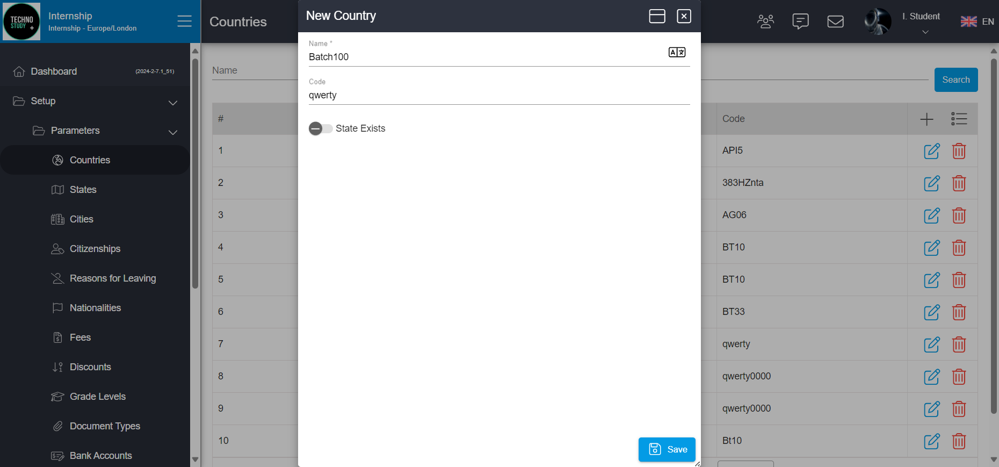

-
Country function
9:38:57 PM / 00:00:16:091 Pass
Country function
02.06.2024 9:38:57 PM 02.06.2024 9:39:13 PM 00:00:16:091 · #test-id=2As a user I want to be able to create, update and delete different countries so I can register students from different countriesPassCreate a new CountryGiven Navigate to campus websiteAnd Enter username and passwordAnd Click on login buttonAnd Navigate to countries pageAnd Click on add buttonAnd Enter country name and country codeWhen Click on save buttonThen Success message should be displayed -
Country function
9:38:57 PM / 00:01:21:015 Fail
Country function
02.06.2024 9:38:57 PM 02.06.2024 9:40:18 PM 00:01:21:015 · #test-id=1As a user I want to be able to create, update and delete different countries so I can register students from different countriesPassCreate a new CountryGiven Navigate to campus websiteAnd Enter username and passwordAnd Click on login buttonAnd Navigate to countries pageAnd Click on add buttonAnd Enter country name and country codeWhen Click on save buttonThen Success message should be displayedFailDelete a countryGiven Navigate to campus websiteAnd Enter username and passwordAnd Click on login buttonAnd Navigate to countries pageAnd Search for the countryAnd Click on delete buttonWhen Click on delete confirmStep skippedThen Success message should be displayedStep skippedstepDefinitions.Hooks.afterScenario(io.cucumber.java.Scenario)FailDelete a countryGiven Navigate to campus websiteAnd Enter username and passwordAnd Click on login buttonAnd Navigate to countries pageAnd Search for the countryAnd Click on delete buttonWhen Click on delete confirmStep skippedThen Success message should be displayedStep skippedstepDefinitions.Hooks.afterScenario(io.cucumber.java.Scenario)Delete a countryFailCreate a new country with parametersGiven Navigate to campus websiteAnd Enter username and passwordAnd Click on login buttonAnd Navigate to countries pageAnd Click on add buttonAnd Enter "Batch100" as country name and "qwerty" as country codeWhen Click on save buttonThen Success message should be displayedstepDefinitions.Hooks.afterScenario(io.cucumber.java.Scenario)Create a new country with parametersFailCreate a new country with parametersGiven Navigate to campus websiteAnd Enter username and passwordStep skippedAnd Click on login buttonStep skippedAnd Navigate to countries pageStep skippedAnd Click on add buttonStep skippedAnd Enter "Batch100" as country name and "qwerty" as country codeStep skippedWhen Click on save buttonStep skippedThen Success message should be displayedStep skippedstepDefinitions.Hooks.afterScenario(io.cucumber.java.Scenario)
-
io.cucumber.core.exception.CucumberException
1 tests
io.cucumber.core.exception.CucumberException
1 failedStatus Timestamp TestName Fail 21:39:47 PM Given Navigate to campus website Country function.Create a new country with parameters.Given Navigate to campus website -
org.openqa.selenium.remote.UnreachableBrowserException
3 tests
org.openqa.selenium.remote.UnreachableBrowserException
3 failedStatus Timestamp TestName Fail 21:39:26 PM And Click on delete button Country function.Delete a country.And Click on delete buttonFail 21:39:47 PM stepDefinitions.Hooks.afterScenario(io.cucumber.java.Scenario) Country function.Delete a country.stepDefinitions.Hooks.afterScenario(io.cucumber.java.Scenario)Fail 21:39:47 PM stepDefinitions.Hooks.afterScenario(io.cucumber.java.Scenario) Country function.Create a new country with parameters.stepDefinitions.Hooks.afterScenario(io.cucumber.java.Scenario) -
org.openqa.selenium.TimeoutException
2 tests
org.openqa.selenium.TimeoutException
2 failedStatus Timestamp TestName Fail 21:39:25 PM And Click on delete button Country function.Delete a country.And Click on delete buttonFail 21:39:57 PM Then Success message should be displayed Country function.Create a new country with parameters.Then Success message should be displayed
-
@SmokeTest
6 tests
@SmokeTest
2 passed 4 failedStatus Timestamp TestName Pass 21:38:57 PM Create a new Country Country function.Create a new CountryPass 21:38:57 PM Create a new Country Country function.Create a new CountryFail 21:39:13 PM Delete a country Country function.Delete a countryFail 21:39:13 PM Delete a country Country function.Delete a countryFail 21:39:47 PM Create a new country with parameters Country function.Create a new country with parametersFail 21:39:47 PM Create a new country with parameters Country function.Create a new country with parameters -
@FireTest
2 tests
@FireTest
2 failedStatus Timestamp TestName Fail 21:39:47 PM Create a new country with parameters Country function.Create a new country with parametersFail 21:39:47 PM Create a new country with parameters Country function.Create a new country with parameters
Started
Feb 6, 2024 09:38:56 PM
Ended
Feb 6, 2024 09:40:18 PM
Features Passed
1
Features Failed
1
Features
Scenarios
Steps
Timeline
Tags
| Name | Passed | Failed | Skipped | Others | Passed % |
|---|---|---|---|---|---|
| @SmokeTest | 2 | 4 | 0 | 0 | 33.333% |
| @FireTest | 0 | 2 | 0 | 0 | 0% |
System/Environment
| Name | Value |
|---|---|
| Operating System Info | Windows 11 |
| Tester name | jdjun |
| Time Zone | America/New_York |
| Application name | Campus |
| Department name | QA |
| Team name | QA Team 1 |
| Operating System Info | Windows 11 |
| Tester name | jdjun |
| Time Zone | America/New_York |
| Application name | Campus |
| Department name | QA |
| Team name | QA Team 1 |